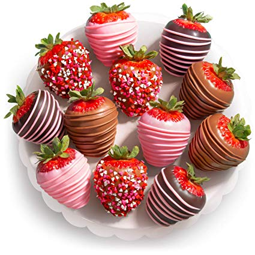

Valentine strawberries

An excellent dessert to give to your partner this February 14, a small gift for a great occasion
Ingredients
- 8 ounces pink candy melts
- 8 ounces bright pink candy melts
- 8 ounces white candy melts
- 24 large fresh strawberries
- sprinkles as needed (optional)
Steps
- Line a baking sheet with parchment or wax paper.
- Microwave candy melts in separate bowls, 1 bowl at a time, stirring every 30 seconds, until melted.
- Dip strawberries into desired color of candy melts. Let excess candy drip off, then set on the prepared baking sheet. Drizzle with another color of candy melts. Top with sprinkles. Chill strawberries until set, at least 15 minutes and up to 2 days.